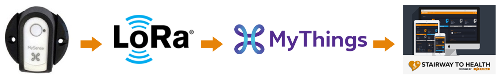
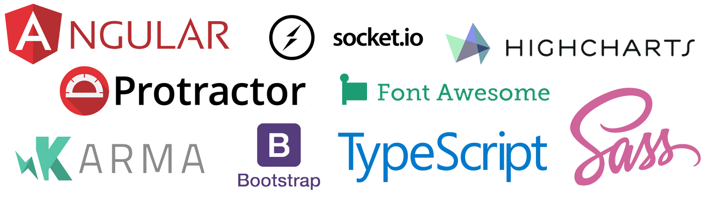
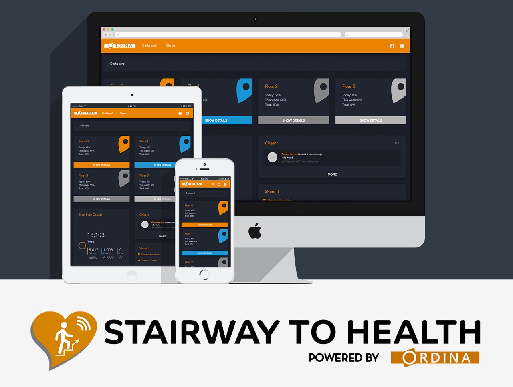
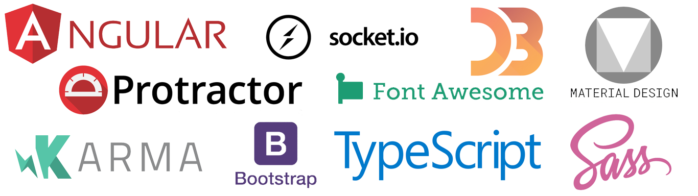
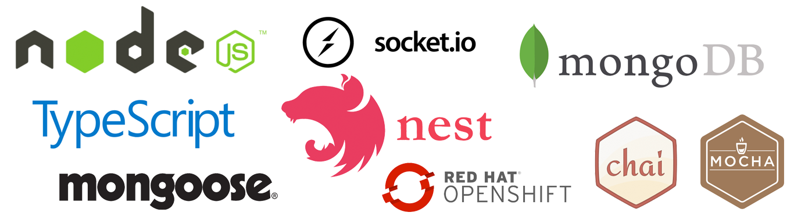
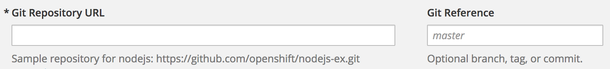

Quick Recap
Stairway to Health 1.0 @ Proximus
The Stairway to Health project is a simple yet great example to show what the Internet of Things can do:
- LoRa sensors detect door openings, these are installed on the doors of the staircases
- These sensors communicate via the LoRa network to report their status
- In our case sensor data is sent to the Proximus MyThings platform which processes the data
- The data gets sent to the Stairway to Health application
- The Stairway to Health application interprets and visualises the data
In summary
- We install sensors on the doors (things) to measure usage
- we analyse the data to persuade people to move more
- The result is a good example of how IoT can influence our daily lives.
Data Flow
StH on big screen @ Proximus Towers
Magnetic pulse door sensors
A lot of them!
Let the games begin!
Technology used
Frontend
Backend
Down
Soon up again
Read more @ our blog
https://ordina-jworks.github.io/iot/2017/10/12/Stairway-To-Health.htmlStairway to Health @ Ordina
(v2.0)
Harder, Better, Faster, Stronger
What's new?
- New (and awesome) frontend design, with Ordina theming obviously
- Upgraded from Angular 4 to Angular 5
- Material Design
- NEST.js in stead of Express.js (still Express underneath, but cleaner code!)
- Eliminated 'callback hell' with async/await
- Backend e2e tests with Mockgoose
- Optimised the storage of our logs for more performance
- Deployed on OpenShift
- New type of sensors
- Cheers feature, users can motivate and support each other
New (and awesome) frontend design
Stairway to Health 2.0New Tech Stack
Frontend
Backend
NEST.js vs Express.js
Still express underneath
Cleaner code (typescript decorators)
Easier set-up
Common (Modular) structure
Guards, Sockets, Interceptors, ...
Own custom decorators, (RoleGuard)
NEST.js vs Express.js
@Controller('/auth/logs')
@UseGuards(RolesGuard)
export class LogAuthController {
// logs-auth.controller.ts
@Get('/total')
@Roles('admin') // Decorator for roles guard we wrote to make sure user is logged in, and has correct role
async getLogCount(): Promise<number> {
return await this.logService.getLogCount();
}
}
// logs.service.ts
async getLogCount(): Promise<number> {
try {
return await this.logModel.count({});
} catch (error) {
throw new HttpException('Error getting logs', HttpStatus.INTERNAL_SERVER_ERROR);
}
}
Backend E2E Tests with Mockgoose
Mockgoose is a wrapper for mongoose, that lets you connect to a non persistent database if you want to.
So in our database provider we can use something like the following:
if (process.env.NODE_ENV === 'test') {
const mockgoose = new Mockgoose(mongoose);
mockgoose.helper.setDbVersion('3.6.0');
mockgoose.prepareStorage()
.then(async () => {
await mongoose.connect('mongodb://localhost:27017/stairwaytohealth2test', {
useMongoClient: true
});
}).catch(() => {
console.log('ERR! Unable to prepare test database');
});
} else { // connect to the database normally }
mockgoose.helper.reset(callback)Optimised the storage of our logs for more performance
With Stairway to Health 1, we use mongo aggregate's to group the data from our logs.
This meant that every time we want the data, we calculate it.
As you can imagine, there was a performance issue once we hit 2M logs
Solution
More collections...
so in stead of calculating everytime we want the data, we update a collection that keeps track of the totals every time a log comes in.
Before
this.sensorLogModel.aggregate({
'$project': {
'value': 1,
'container': 1,
'timestamp': 1,
'_id': 1,
'friendlyName1': 1
}
},{
'$match': {
'friendlyName1': entity.friendlyName1,
'container': entity.container,
'value': {$ne: '0'},
'timestamp': {
$gt: timespan.start,
$lt: timespan.end
}
}
},{
'$group': {
'_id': '$friendlyName1',
'count': {$sum: '$value'},
}
}
)
After
// note that we put it in a variable, so it's not blocking ('awaiting')
let dailyCountPromise = this.dailyCountsModel.update({
identifier: dailyIdentifier,
friendlyName1: item.friendlyName1,
friendlyName2: item.friendlyName2,
hour: item.hour
}, {
$inc: {counts: item.numericValue}
}, {upsert: true});
We do this for all chart types
let weeklyCountPromise = this.weeklyCountsModel.update( ... );
let monthlyCountPromise = this.monthlyCountsModel.update( ... );
let yearlyCountPromise = this.yearlyCountsModel.update( ... );
let totalCountPromise = this.totalCountsModel.update( ... );
Promise.all([weeklyCountPromise, monthlyCountPromise, ...])Example Data DailyCounts
{
"date": {
"$date": "2017-12-20T21:49:15.532Z"
},
"friendlyName1": "C",
"friendlyName2": "1",
"hour": 22,
"identifier": "20-12-2017",
"counts": 55
}
Deploying
Why OpenShift
- Easy to set up (demo git repo to get started from)
- Scalable
- Easy deployment (Continuous Integration)
Continuous Integration
Continuous Integration (CI) is a development practice that requires developers to integrate code into a shared repository several times a day. Each check-in is then verified by an automated build, allowing teams to detect problems early.
- Say goodbye to long and tense integrations
- Catch issues early and nip them in the bud
- Spend less time debugging and more time adding features
- Stop waiting to find out if your code’s going to work
- Reduce integration problems allowing you to deliver software more rapidly
Setup with git(hub)
When creating the openshift application we get asked for a github url and optionally a branch
Once created we get a Webhook URL from OpenShift, that we can then add to our repositories webhooks.
Whenever we push to the repository, the webhook gets triggered, and openshift starts a new build.
Environments
- We've set up 2 environments, develop and production.
- Therefore we have linked both our master and develop branch to an OpenShift application.
- When we develop, we create a feature branch, once it runs and works locally, we merge it into develop.
- When merging in develop (and pushing to github), it gets deployed on our OpenShift dev application.
- Once the feature is ready and tested, we create a pull request to merge our develop branch into master
- Which triggers a deploy of our production environment
New sensor type
MySense

Thanks for watching!
Now kick some ass!